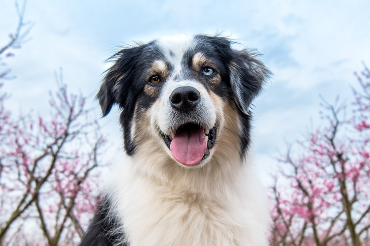
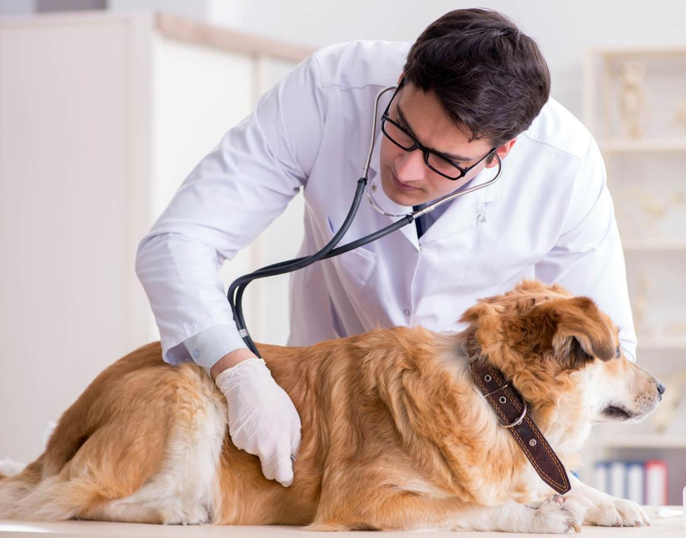
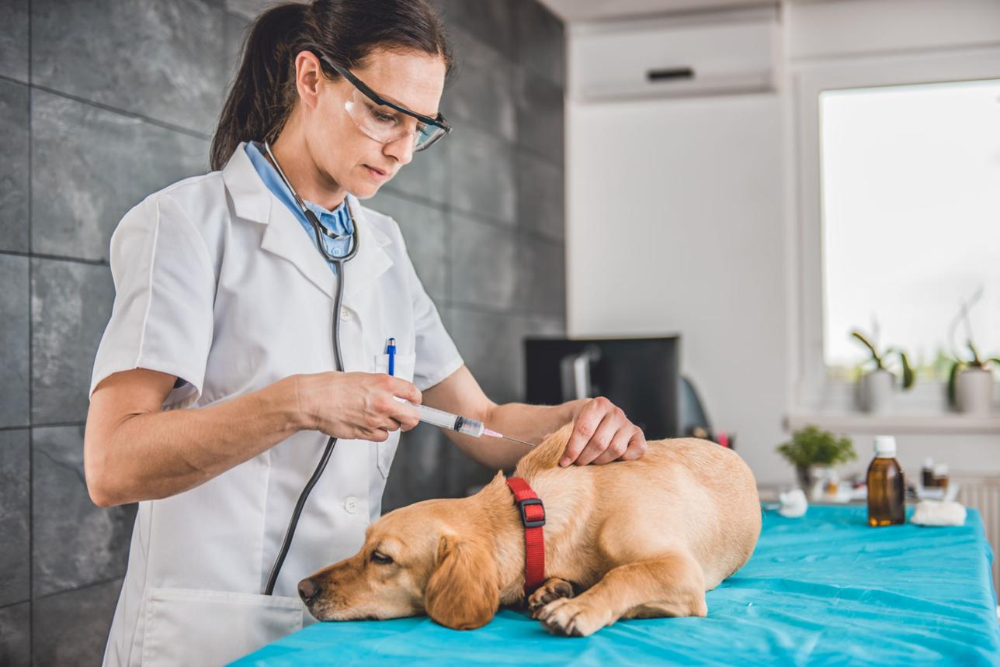

مراقبت، ویزیت و خرید محصولات سگ در یک صفحه
از ویزیت آنلاین با دامپزشک تا خرید غذای خشک، دارو، مکمل و تجهیزات نگهداری سگ؛ همه چیز بر اساس نیاز سگ شما دستهبندی شده است.

برای سگ شما چه کاری انجام میدهیم؟
در این بخش میتوانید سریعتر به خدمات مرتبط با سگ دسترسی داشته باشید؛ از مشاوره دامپزشکی تا خرید دارو و محصولات تخصصی.
ویزیت آنلاین سگ
علائم، تصاویر یا ویدیوهای سگ خود را ارسال کنید و از دامپزشک متخصص راهنمایی و نسخه الکترونیکی دریافت نمایید.
شروع ویزیتداروخانه سگ
داروها و مکملهای موردنیاز سگ را با نسخه معتبر ثبت کنید و سفارش خود را به صورت آنلاین پیگیری نمایید.
مشاهده داروهافروشگاه سگ
غذای خشک، کنسرو، تشویقی، قلاده، اسباببازی و تجهیزات نگهداری سگ را از فروشگاه تهیه کنید.
ورود به فروشگاهمحصولات سگ را سریعتر پیدا کنید
محصولات فروشگاه سگ بر اساس نیازهای اصلی دستهبندی شدهاند تا کاربر بدون جستجوی زیاد، سریعتر به محصول مناسب برسد.
غذای خشک
انواع برندهای تخصصیکنسرو
غذای تر و مقویتشویقی
برای آموزش و جایزهمکمل
ویتامین و تقویتیبهداشت
شامپو و مراقبتاسباببازی
سرگرمی و فعالیتالان دقیقاً دنبال چه کاری هستید؟
مسیر موردنظر خود را انتخاب کنید تا سریعتر به بخش مناسب هدایت شوید و بدون جستجوی اضافی خدمات موردنیاز سگ خود را دریافت کنید.
سگم بیمار شده
اگر سگ شما علائمی مانند بیحالی، استفراغ، تب یا مشکلات پوستی دارد، همین حالا با دامپزشک آنلاین گفتگو کنید.
شروع ویزیتنسخه دامپزشک دارم
نسخه خود را بارگذاری کنید تا داروهای موردنیاز بررسی و در کوتاهترین زمان برای شما ارسال شوند.
ثبت نسخهفقط میخواهم خرید کنم
اگر به دنبال غذای خشک، تشویقی، مکمل یا تجهیزات نگهداری سگ هستید، وارد فروشگاه تخصصی شوید.
ورود به فروشگاهانتخابهای محبوب صاحبان سگ
محصولات پرکاربرد و پرفروش مخصوص سگ، شامل غذا، مکمل، بهداشت و سرگرمی را سریعتر پیدا کنید.
ویزیت آنلاین با پزشکان باتجربه
در این بخش دامپزشکانی نمایش داده میشوند که تجربه بیشتری در زمینه بیماریها، تغذیه و مراقبت از سگها دارند.
توصیههای دامپزشکان را بخوانید
جدیدترین مقالات آموزشی درباره تغذیه، مراقبت، بیماریها و سبک زندگی سالم سگها توسط دامپزشکان و متخصصان تهیه شدهاند.
راهنمای کامل تغذیه توله سگ در سال اول زندگی
با انتخاب غذای مناسب در ماههای ابتدایی، رشد سالمتر و سیستم ایمنی قویتری برای سگ خود فراهم کنید.
مطالعه مقاله →
علائم بیماریهای پوستی در سگ و زمان مراجعه به دامپزشک
خارش، ریزش مو و التهاب پوست از رایجترین مشکلات سگها هستند که باید به موقع بررسی شوند.
مطالعه مقاله →
برنامه واکسیناسیون سگ از تولگی تا بزرگسالی
با رعایت برنامه واکسیناسیون، از بسیاری از بیماریهای خطرناک و واگیردار پیشگیری کنید.
مطالعه مقاله →چند توصیه ساده برای سلامت بهتر سگ شما
رعایت چند نکته ساده در تغذیه، فعالیت روزانه و مراقبتهای دورهای میتواند از بسیاری از مشکلات رایج جلوگیری کند.
تغذیه منظم
برنامه غذایی سگ باید متناسب با سن، وزن، نژاد و میزان فعالیت او تنظیم شود و از تغییر ناگهانی غذا خودداری گردد.
فعالیت روزانه
پیادهروی و بازی روزانه به سلامت مفاصل، کنترل وزن و کاهش اضطراب سگ کمک میکند.
مراقبت دورهای
واکسیناسیون، ضدانگل و معاینه دورهای توسط دامپزشک نقش مهمی در پیشگیری از بیماریها دارد.
مطمئن نیستید کدام مراقبت برای سگ شما مناسب است؟
با ثبت ویزیت آنلاین، دامپزشک بر اساس شرایط سگ شما بهترین راهنمایی را ارائه میدهد.
همه اطلاعات سگ خود را در یک پرونده نگهداری کنید
پس از ثبتنام میتوانید اطلاعات واکسنها، داروها، وزن، سوابق درمان و ویزیتهای قبلی سگ خود را در یک پرونده دیجیتال مشاهده و مدیریت کنید.
هنوز برای سلامت سگ خود سوال دارید؟
دامپزشکان ما آمادهاند تا درباره تغذیه، بیماریها، داروها و مراقبتهای روزانه سگ شما راهنمایی تخصصی ارائه دهند.
پاسخ سوالات پرتکرار کاربران
در این بخش پاسخ رایجترین سوالات درباره ویزیت آنلاین، داروخانه، فروشگاه و نحوه استفاده از سامانه را مشاهده میکنید.
پس از انتخاب دامپزشک، اطلاعات حیوان، تصاویر یا ویدیو را ارسال میکنید و در زمان تعیینشده به صورت آنلاین با دامپزشک گفتگو خواهید کرد.
بله، داروهای نسخهای تنها پس از بارگذاری نسخه معتبر دامپزشک قابل سفارش هستند.
بسته به شهر مقصد، سفارشها معمولاً بین ۱ تا ۳ روز کاری ارسال و تحویل داده میشوند.
بله، پس از ورود به پنل کاربری تمامی ویزیتها، نسخهها، داروها و سوابق درمان حیوان در پرونده سلامت ثبت خواهد شد.
از طریق گفتگوی آنلاین، شماره تماس یا ارسال تیکت از داخل پنل کاربری میتوانید با تیم پشتیبانی ارتباط برقرار کنید.